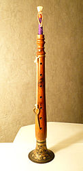

The shehnai, shahnai, shenai or mangal vadya (Hindi: शहनाई, Bengali: শানাই,
Marathi: सनई) is a musical instrument similar to the oboe, common in India,
Pakistan, and Bangladesh. It is made out of wood, with a double reed at one end
and a metal or wooden flared bell at the other end. Its sound is thought to
create and maintain a sense of auspiciousness and sanctity and, as a result, is
widely used during marriages, processions and in temples although it is also
played in concerts. The shehnai is similar to South India's nadaswaram.
Characteristics:

This tubular instrument gradually broadens towards the lower end. It usually has
between six and nine holes. It employs one set of quadruple reeds, making it a
quadruple reed woodwind. By controlling the breath, various tunes can be played
on it.
The shehnai has a range of two octaves, from the A below middle C to the A one
line above the treble clef (A3 to A5 in scientific pitch notation).
Origin of the shehnai:
The shehnai is thought to have been developed by improving upon the pungi (a
woodwind folk instrument used primarily for snake charming).
Another theory of the origin of the shehnai is that the name is a modification
of the word "sur-nal". The word nal/nali/nad is used in many Indian languages to
mean pipe or reed. The word "sur" means tone or tune—musical note or simply
music—and is used as a prefix to the names of many Indian instruments. The
"sur-nal" is said to have given its name to the "surna/zurna" which is the name
by which the reed-pipe is known throughout the Middle East and eastern Europe.
Shehnai is usually played at traditional North Indian weddings and is associated
with the bride leaving her parental house for her husband's house. Sometimes,
two shehnais can be tied together, making it a double shawm similar to the
ancient Greek aulos.
Whereas the counterparts played in West Indian and Coastal Karnataka are
indigenous to the territory. Shenai players were/are an integral part of
Goan/Konkani and temples along the western coast and the players are called as
Vajantri and they were allotted lands for services rendered for the temples.
Notable Indian shehnai players:
Bismillah Khan.
Anant Lal.
S. Ballesh.
Lokesh Anand.
Ali Ahmed Hussain Khan.
Daya Shankar.
Ali Hussain.